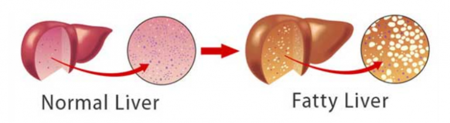

Fatty Liver Disease Affects 4 Out Of 10 People

Fatty liver disease is the root problem for a long list of common ailments (including weight gain). Unless you heal the liver first, your health will never recover.
You’d be surprised to learn that the liver is responsible for over 800 bodily functions. That’s a lot of responsibility. So when the liver becomes damaged, it won’t work like its supposed to.
Because the body is an incredibly complex machine, if something isn’t working properly, it has a knock-on effect that causes problems in other areas of your body.
One of the livers main functions is to filter out toxins.
Compared to days of old – the modern world we live in is plagued with toxins. With air pollution, plastics and heavy metals in our diet, drugs, pesticides, unnatural foods and preservatives – our liver has to work harder than ever. And when you throw alcohol into the mix (even if you’re a responsible drinker), your liver begins to buckle under the pressure.
This means toxins that should have been filtered out, remain in your system, wrecking havoc on your body. When toxins build up, it reflects in your health and appearance. This includes: weight gain, depression, premature aging, hair loss, low energy, and digestive issues (this is just the tip of the iceberg).
There is a very long list of common medications that damage your liver. This is why many drugs specifically warn you not to be taken while consuming alcohol.
This is why it’s important to try every last natural remedy before you opt for harmful medication.
Prolonged damage to the liver causes fatty liver.

30% to 40% of people in the US have fatty liver disease.
1 in 10 children have the disease.
Here are some symptoms of a fatty liver:
– Heart pain.
– Gynecomastia (man boobs) because your liver isn’t filtering out xenoestrogens.
– Night blindness
– High cholesterol
– Fat gut, protruding gut, “beer gut” (this is a clear sign of fatty liver).
– Diabetes
– Fatigue
– Bad breath
– Itching
– Insulin resistance (because of a high carb diet).
What a lot of people don’t realize is that a fatty liver causes weight gain. This is because a fatty liver is unable to properly process high levels of insulin.
Over time, repeatedly high insulin levels will damage your liver. High insulin levels are caused by a high carbohydrate diet.
When your body develops insulin resistance (because of a high carb diet), the first symptom is weight gain. As the problem gets worse, high high blood pressure, heart disease and type-2 diabetes will develop (metabolic syndrome).
Many people successfully heal their insulin resistance with the ketogenic diet, but if weight loss stalls after a while, it’s because you need to heal your fatty liver first.
Do you want to look and feel younger again?
The reason why you want to start a liver cleansing diet if you have fatty liver disease, is because you want to give your liver the perfect opportunity to regenerate. Medications will never be able to regenerate the liver unless the medications are stem cells!
Your body was made to last for many years, but because of all the toxic chemicals, pesticides, herbicides, and heavy metals in the environment now, we all have to cleanse our liver from these substances if we want our liver to perform properly.
When we do, the benefits are immense:
1. Increased energy levels – Toxins drain your body of energy.
2. Increased mental focus – With fewer toxins in the brain, your mental focus is like a laser.
3. Stronger immune system – Liver cells do participate in immunity.
4. Clearer skin – Your friends will notice how radiant your skin is after starting a liver cleansing diet.
5. Greater creativity – Fewer toxins in the brain means ideas will flow freely.
6. Healthier hair and nails – With a liver cleansing diet, your hair will grow thicker and nails will look healthier.
7. Body smells better – Without toxins, your body smells better.
8. Weight loss – All of that excess weight is due to a sluggish liver.
9. Easier to get up in the morning – Toxins bog you down and make you feel more fatigued. Without them, you’ll spring out of bed.
10. Resetting of the body’s sleep cycles – Melatonin is more efficiently created when liver cells are working better – allowing you to fall asleep quickly and a better quality sleep.
11. Relief from allergies – Allergies will be a thing of the past if you do enough liver cleanses and eat a liver cleansing diet.
12. No need for body therapies such as chiropractic and massage – Without toxins building up in the joints, you feel freer and have a better range of motion.
13. Vision improves – In Chinese medicine, eyesight is connected with the liver meridian.
14. Alleviate depression – Depression is an emotion translated into chemicals in the body. If the liver is clogged, then the body can’t break down the chemicals and they recirculate throughout the body. This contributes to depression.
15. Hormones balance out on their own – One function of the liver is to break down hormones and create new hormones. With a purer liver, your body is able to do this easier.
16. Normalization of body functions (heart rate, blood pressure) – Over time, a liver cleansing diet tends to balance heart rate and blood pressure.
17. Mood balancing – Since the liver’s function includes breaking down the chemicals produced by emotions, when you detoxify, it helps improve moods.
In short, your fatty liver is robbing you of your health and making it virtually impossible for you to lose weight, feel great and enjoy your life.
But the good news is that fatty liver is reversible in almost 99% of cases.
You’ll finally be able to…
REVERSE inflammation and damage to your liver.
LOSE WEIGHT quickly and effortlessly
Eradicate your health problems at the SOURCE
Lower your risk of contracting life-threatening diseases such as heart attacks, stroke, diabetes, cancer, cirrhosis of the liver, and more – and Add YEARS to your life expectancy
Get CLEARER, SMOOTHER SKIN by removing toxins from your liver, and get rid of patchy, dark skin discolorations too…
Increase vitality and ENERGY levels, and feel like a teenager once again!
Eliminate “brain fog” and improve MENTAL CLARITY and concentration…
DEFEAT DEPRESSION and enjoy a renewed zest for life (going through life feeling tired, weak and lacking in energy is one of the major causes of depression)…
Improve your SLEEP and feel energized and invigorated every morning…
Finally put an end to bloating, cramps and abdominal PAIN…
Save thousands of dollars on drugs, painkillers and other medication, which are merely “masking” the symptoms of your ill health, but doing NOTHING to fix the cause.